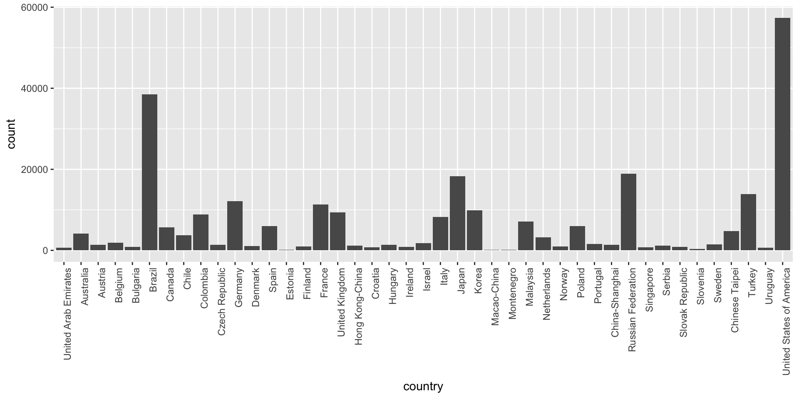
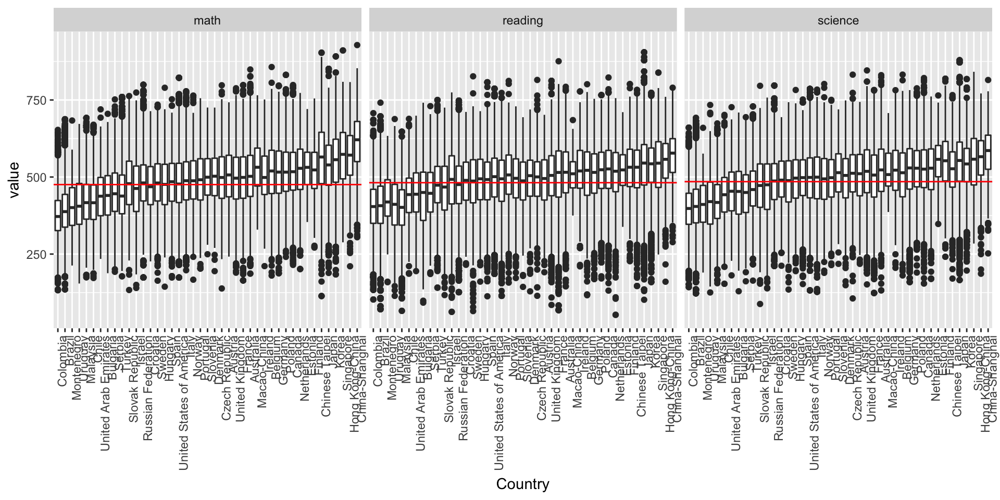
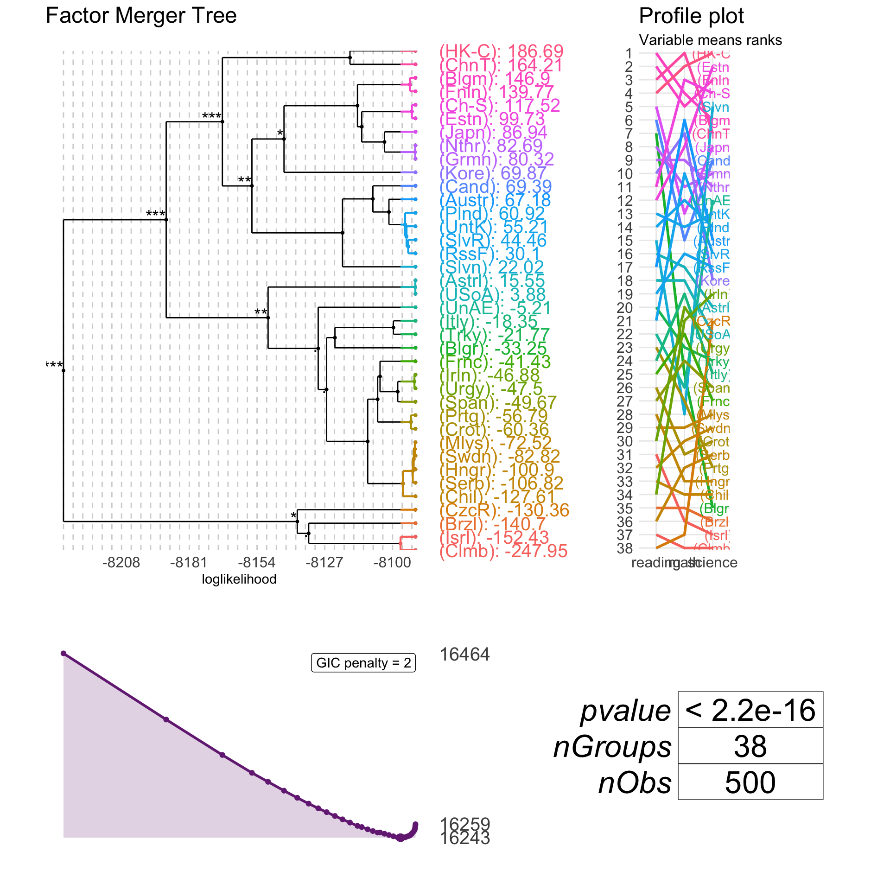
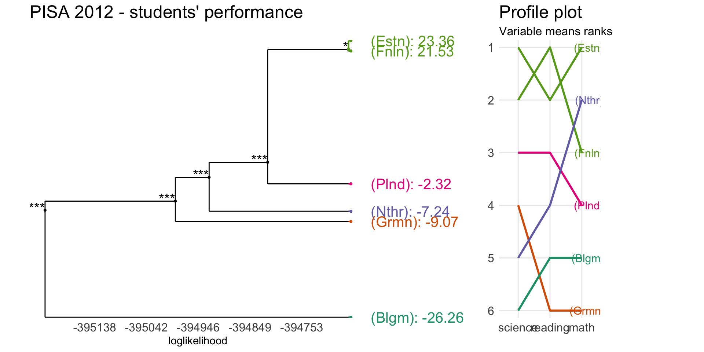
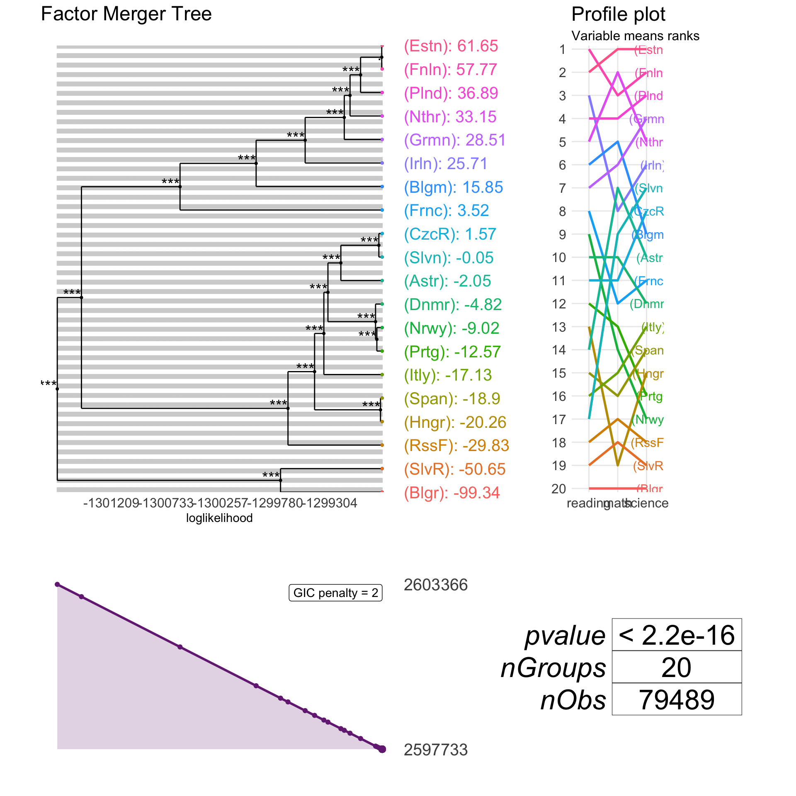

PISA 2012 - multi dimensional Gaussian merging
Agnieszka Sitko
2017-12-17
Explore
pisa2012 %>% ggplot(aes(x = country)) + geom_bar() +
theme(axis.text.x = element_text(angle = 90, hjust = 1))
meltedPisa <- pisa2012 %>% melt(na.rm = TRUE)
pisaResultsBySubject <- meltedPisa %>%
ggplot(aes(x = reorder(country, value, FUN = median), y = value)) + geom_boxplot() +
facet_wrap(~variable) +
theme(axis.text.x = element_text(angle = 90, hjust = 1)) +
xlab("Country") pisaResultsBySubject +
geom_hline(data = meltedPisa %>% group_by(variable) %>% summarise(mean = mean(value)),
aes(yintercept = mean, group = variable), col = "red")
TODO: Find countries significantly better, worse and not significantly different from global averages. Cluster countries into three groups.
Run MANOVA
manova(cbind(math, reading, science) ~ country, pisa2012) %>% summary()
#> Df Pillai approx F num Df den Df Pr(>F)
#> country 42 0.32207 776.81 126 813837 < 2.2e-16 ***
#> Residuals 271279
#> ---
#> Signif. codes: 0 '***' 0.001 '**' 0.01 '*' 0.05 '.' 0.1 ' ' 1It seems that there exist some differences among countries included in PISA. Let’s find them!
Factor Merger
pisaIdxSubset <- sample(1:nrow(pisa2012), size = 500)
pisaFM <- mergeFactors(pisa2012[pisaIdxSubset, 1:3],
factor(pisa2012$country[pisaIdxSubset]))
plot(pisaFM, type="tree", responsePanel = "profile") It’s faster to use “fast-adaptive” or “fast-fixed” methods on a big dataset. They enable comparisons between neighbours only (neighbours is a pair of groups with close means).
pisaIdxSubset <- which(pisa2012$country %in% c("Belgium",
"Netherlands",
"Poland",
"Germany",
"Finland",
"Estonia"))
pisaFMHClust <- mergeFactors(pisa2012[pisaIdxSubset, 1:3],
factor(pisa2012$country[pisaIdxSubset]),
method = "fast-fixed")
plot(pisaFMHClust, responsePanel = "profile",
penalty = log(length(pisaFMHClust$factor)),
panel = "response", nodesSpacing = "effects",
panelGrid = F, palette = "Dark2",
title = "PISA 2012 - students' performance") Let’s now have a try using European countries only.
pisaEuropean <- filter(pisa2012, country %in% c("Austria", "Belgium", "Bulgaria",
"Czech Republic", "Germany", "Denmark",
"Spain", "Estonia", "Finland",
"France", "Hungary", "Ireland",
"Italy", "Netherlands", "Norway",
"Poland", "Portugal",
"Russian Federation", "Slovak Republic",
"Slovenia"))
pisaFMHClustEurope <- mergeFactors(pisaEuropean[,1:3],
factor(pisaEuropean$country),
method = "fast-fixed")
plot(pisaFMHClustEurope)